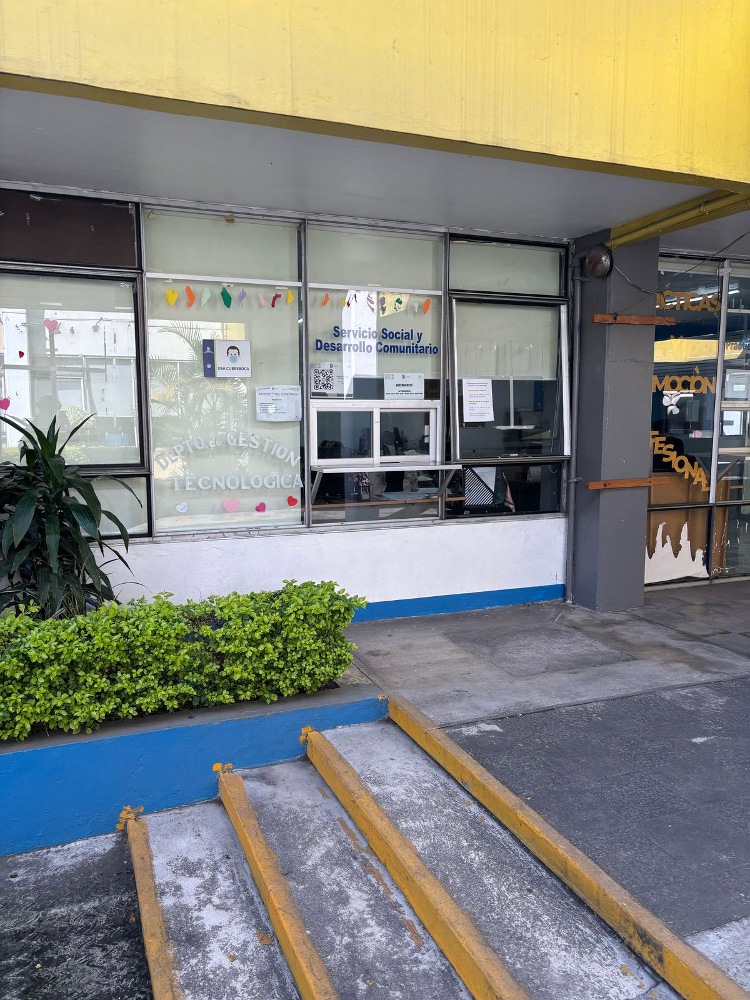

Instrucciones de que documentos deberas llevar y como
- Solicitud de servicio social descargar pdf
- Carta compromiso descargar pdf
- Carta de asignacion descargar pdf
- Plan de trabajo descargar pdf
- Primer reporte de actividades descargar pdf
- Segundo reporte de actividades descargar pdf
- Tercer reporte de actividades descargar pdf
- Reporte final descargar pdf
Documentos Requeridos
A continuación, se muestra una imagen con la ubicación del departamento donde tendras que entregar la documentacion:
